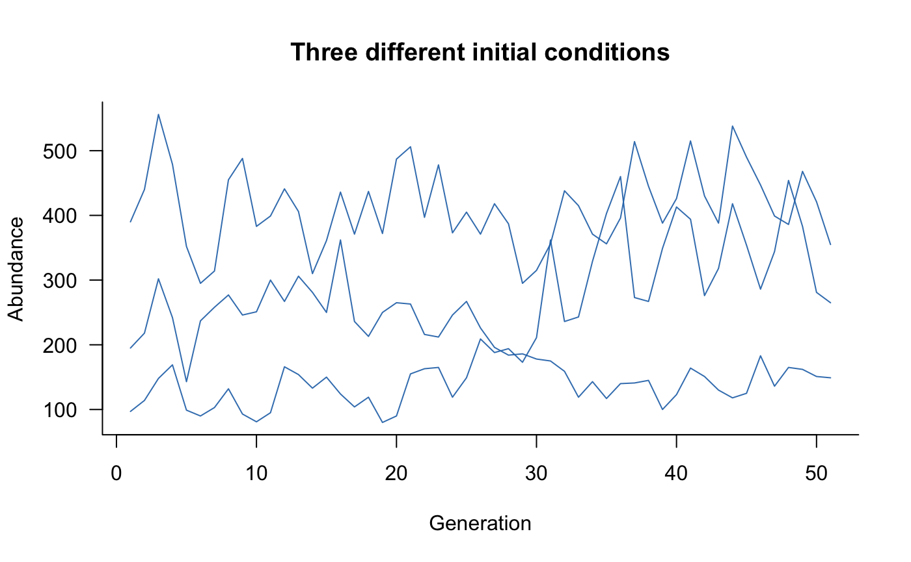
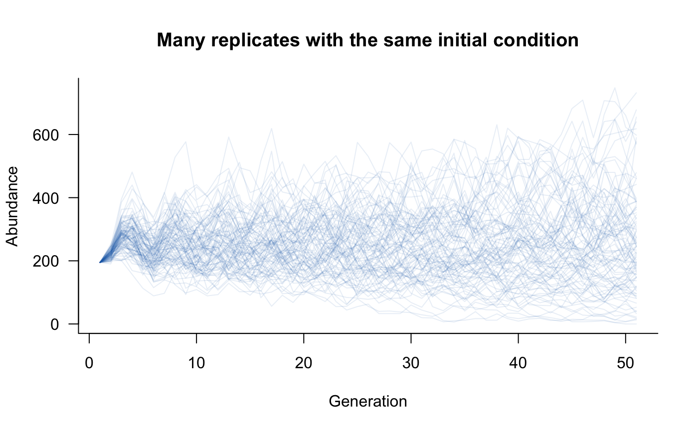
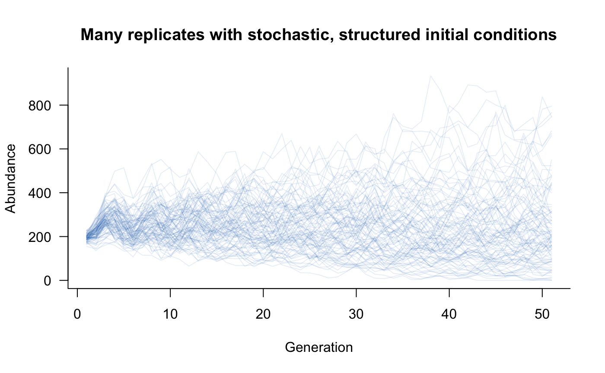

vignettes/beyond_defaults.Rmd
beyond_defaults.Rmdaae.pop sets default options to speed the process of defining and simulating population dynamics. These defaults are acceptable in some cases but are unlikely to suit all applications. This vignette covers the primary settings and some useful alternatives.
The simulate function has several relatively intuitive settings:
nsim: the number of replicate simulations to run. The default is 1. Increasing this value makes sense if including any form of variation, such as demographic or environmental stochasticity or multiple initial conditions. Replicate simulations are vectorised, so including replicates will (in most cases) be substantially faster than multiple simulations with nsim = 1.
seed: the random seed used to initialise any random draws. Defaults to NULL, in which case the seed from the current workspace is used. Set this value if reproducible results are required.
options: these are the basic settings that control how simulate works. Several more-complex settings are described in Updaters and Initial conditions, below.
ntime: number of time steps to simulate. Defaults to 50 and is ignored if covariates are included in a model because covariates determine the number of time steps.keep_slices: should simulate return every intermediate time step? Defaults to TRUE, set to FALSE if only the final time step is required. This will reduce memory use, which is helpful for large models.tidy_abundances: what happens to abundance estimates after each iteration? Defaults to identity, which means that abundances are left unchanged, potentially as decimal values. A good alternative is floor, which will round down to the nearest integer, implying that fractional individuals cannot exist. Can be replaced with any function that takes in a vector and returns a vector of the the same size (e.g., ceiling, round).All of the above settings can be changed directly in a call to simulate. options is a named list, so a modified call to simulate might look like:
sims <- simulate( popdyn, nsim = 100, seed = 123, options = list(ntime = 30, keep_slices = FALSE, tidy_abundances = floor) )
Alternatively, if certain settings need to be updated for all simulations in a project, it might be easier to change these at a deeper level through the global options in R. Specifically, ntime, keep_slices, and tidy_abundances are all set as options and can be updated with:
Setting initial conditions is a really important part of population dynamics modelling. The default initial conditions in aae.pop are random Poisson draws with a mean of 10. This is very simplistic, and assumes that a model will be run for many generations and that transient dynamics are not of interest.
The default initial conditions can be changed in several ways. First, the mean of the Poisson distribution can be changed by setting initialise_args in the options argument to simulate:
Alternatively, this value can be changed for all simulations in an R session with the options function:
options(aae.pop_lambda = 20)
At a slightly deeper level, if a Poisson distribution is inappropriate, this can be changed to any other function through the options function.
# define your own initialisation function my_initials_function <- function(n, other_arguments) { simulate_n_values_somehow(n = n, other_arguments) # e.g. rnbinom, rlnorm, ... } # this neeeds wrapping up so aae.pop can use it initials_function_wrapper <- function(n, args) { do.call(my_initials_function, c(list(n), args)) } # set this at the global level (i.e. for an entire R session) options(aae.pop_initialisation = initials_function_wrapper)
The form of the wrapper function is restricted and must include two arguments: n, an integer, and args, a list of other arguments passed to simulate through the initialise_args element of the options argument. The initialisation function itself is less restricted but the first argument must be an integer specifying the number of values to simulate. This function cannot include structure in abundances, such as differences among age classes or replicates.
More complex initial conditions can be passed to simulate with the init argument. Initial conditions can be specified as a vector with one element per population class or as a matrix (or array) with one row per replicate and one column per population class. If specified as a vector and nsim is greater than 1, the initial conditions are assumed to be the same in all replicates. This approach allows initial conditions with any amount of structure or detail:
# need a matrix/array with one row per replicate and one column # per class (5 age classes in this example) my_initials <- matrix( c( 100, 50, 25, 15, 5, # first replicate 200, 100, 50, 30, 10, # second replicate 50, 25, 12, 8, 2 # third replicate ), nrow = 3, # will set 3 replicates in simulate ncol = 5, # and 5 age classes byrow = TRUE # this just makes formatting easier ) # simulate with these values sims <- simulate( popdyn, nsim = 3, seed = 123, init = my_initials, options = list(tidy_abundances = floor) ) # plot this plot(sims, col = scales::alpha("#2171B5", 0.9), main = "Three different initial conditions")

The previous example might be a bit unwieldy with many replicates, in which case a single vector can be passed to simulate:
# need a vector with one value per class (5 age classes, here) my_initials <- c(100, 50, 25, 15, 5) # simulate with these values sims <- simulate( popdyn, nsim = 100, seed = 123, init = my_initials, options = list(tidy_abundances = floor) ) # plot this plot(sims, col = scales::alpha("#2171B5", 0.1), main = "Many replicates with the same initial condition")

Alternatively, this approach could be modified to add stochasticity to initial conditions while retaining some of the structure from the previous examples:
# generate a matrix with one row per replicate and one column # per class (5 classes, 100 replicates), setting a different # mean (lambda) in each column my_initials <- matrix( rpois(5 * 100, lambda = c(100, 50, 25, 15, 5)), nrow = 100, ncol = 5, byrow = TRUE ) # simulate with these values sims <- simulate( popdyn, nsim = 100, seed = 123, init = my_initials, options = list(tidy_abundances = floor) ) # plot this plot(sims, col = scales::alpha("#2171B5", 0.1), main = "Many replicates with stochastic, structured initial conditions")

The update step is where abundances get updated from one time step to the next (e.g., one generation). This process is typically the slowest part of simulating population dynamics, at least in realistically complex models.
The default updater in aae.pop is R’s built-in cross product. This method is extremely fast and is vectorised, so handles replicates easily. There are two catches:
The cross product approach is still recommended in most cases, and outperforms most R-based alternatives, including C++ tools written specifically for matrix operations.
The updater can be changed at a global level through the options function:
# change updater options(aae.pop_update = update_my_way)
The aae.pop package includes two alternatives, which incorporate demographic stochasticity using Binomial draws (update_binomial_leslie, for Leslie matrices) or multinomial draws (update_multinomial, for all other matrices). These approaches are not as fast as the default cross product method. The update_binomial_leslie method is demonstrated in the Macquarie perch example model.
Although not trivial, it is relatively easy to define an updater using a bespoke method. The updater function simply needs two input arguments, a matrix of replicate population vectors and a population matrix, and needs to return an updated matrix of replicate population vectors. The population vectors are always provided as a matrix with replicates in rows and classes in columns, and the population matrix will always be a square matrix with one row/column for each class.
Looking inside the built-in updaters will give some insight into the structure of aae.pop updaters. update_crossprod simply uses R’s tcrossprod function to handle the matrix of replicate population vectors:
## function (pop, mat)
## {
## tcrossprod(pop, mat)
## }
## <bytecode: 0x7fbb11794070>
## <environment: namespace:aae.pop>The update_binomial_leslie function is slightly more complicated and includes a check for integer abundances and then uses a mix of Poisson (for reproduction) and Binomial draws (for survival):
## function (pop, mat)
## {
## if (!all(pop%%1 == 0)) {
## stop("some abundances are not integers, so cannot be used ",
## "with update_binomial_leslie. Check options()$tidy_abundances ",
## "and update with an appropriate method (e.g. floor)",
## call. = FALSE)
## }
## if (is.null(dim(pop)))
## pop <- matrix(pop, nrow = 1)
## pop_nm1 <- pop[, -ncol(pop), drop = FALSE]
## vals <- tcrossprod(pop, mat)
## probs <- vals[, -1]/pop_nm1
## probs[pop_nm1 == 0] <- 0
## cbind(rpois(nrow(vals), lambda = vals[, 1]), matrix(rbinom(length(probs),
## size = pop_nm1, prob = probs), nrow = nrow(pop_nm1)))
## }
## <bytecode: 0x7fbb0f7129e0>
## <environment: namespace:aae.pop>The primary reason to change the updater is speed. Although update_crossprod is relatively fast compared to other R methods, it is highly likely that other methods can be sped up through, for example, the use of C++ matrix libraries (e.g., RcppEigen and RcppArmadillo). The final updater to use is best determined through benchmarking of alternative updaters. Keep in mind that aae.pop is built for flexibility and R compatibility rather then speed per se. If speed is the primary limitation or concern, a better approach might involve coding the entire simulation process in C++ or similar (e.g., Julia).